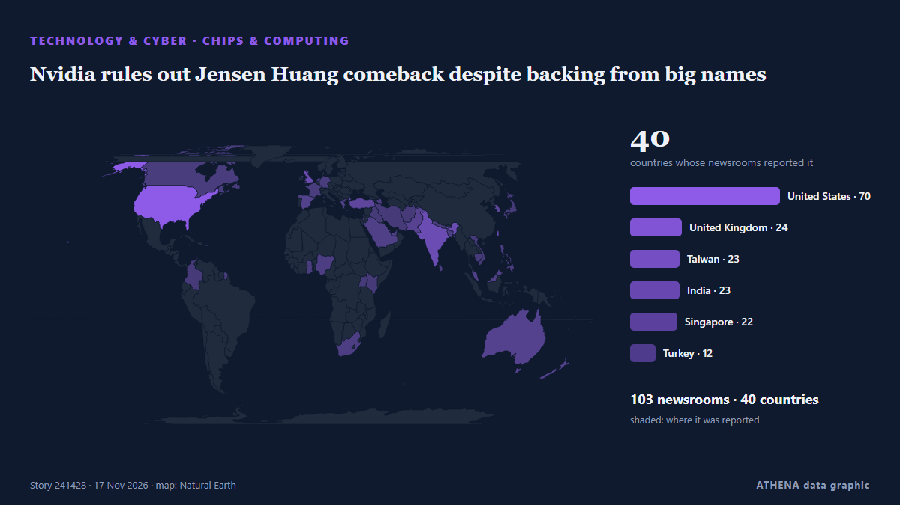

Τεχνολογία, ΤΝ & Κυβερνοασφάλεια
ΧορηγούμενοΠαρουσιάζεται από  Cybernetics and Artificial Intelligence Lab Welcome to the Cybernetics and Artificial Intelligence Laboratory, established at the Department of Business Administration of the National and Kapodistrian University of Athens. The lab is headed by Professor Dimitrios Thomakos. The lab aims to do research that can be published in top venues. Our research uses tools and methods of Artificial Intelligence, and lies in the following areas: - Forecasting - Decision making - Cyber security - Finance We are always looking forward to collaborating with exceptional students!
Cybernetics and Artificial Intelligence Lab Welcome to the Cybernetics and Artificial Intelligence Laboratory, established at the Department of Business Administration of the National and Kapodistrian University of Athens. The lab is headed by Professor Dimitrios Thomakos. The lab aims to do research that can be published in top venues. Our research uses tools and methods of Artificial Intelligence, and lies in the following areas: - Forecasting - Decision making - Cyber security - Finance We are always looking forward to collaborating with exceptional students!
Οι τίτλοι των ειδήσεων παρουσιάζονται στα αγγλικά, όπως δημοσιεύτηκαν.

Επεξεργαστές & υπολογιστικήNvidia rules out Jensen Huang comeback despite backing from big names
Nvidia is not considering reinstating the scandal-hit Jensen Huang as chief executive, despite a growing campaign for his return. από ABC News Australia
| 4 Νοε | 99 |
|---|---|
| 5 Νοε | 112 |
| 6 Νοε | 54 |
| 7 Νοε | 37 |
| 8 Νοε | 42 |
| 9 Νοε | 103 |
| 10 Νοε | 114 |
| 11 Νοε | 83 |
| 12 Νοε | 75 |
| 13 Νοε | 88 |
| 14 Νοε | 38 |
| 15 Νοε | 42 |
| 16 Νοε | 84 |
| 17 Νοε | 18 |
Singapore, US agree to keep discussing Megaspeed as scrutiny of Nvidia scandal widens
Singapore's government said on Monday it has agreed to continue discussions with the United States about Megaspeed, the company at the centre of the Nvidia scandal. από Deccan Herald
SK Hynix to spend $1 billion over five years to support chip suppliers
SEOUL: South Korea’s SK Hynix said on Monday it plans to spend 1.4 trillion won ($1.05 billion) over the next five years to support domestic suppliers of semiconductor materials, parts and… από Business Recorder
US judge tosses new visa rules for Nigerians, other foreign students, journalists
A US federal judge on Monday struck down a Trump administration policy that would impose stricter limits on how long foreign students and journalists can study or work in the United States. από Vanguard
Top scorer of tax accountant exam apologizes for cheating before police questioning
SEOUL, Nov. 17 (Yonhap) -- The top scorer of this year's certified tax accountan... από Yonhap (English)
Google Maps rolling out travel itineraries & list search for Ask Maps
Ahead of the holiday season, Google Maps is launching a handy travel itineraries feature alongside a slew of other new capabilities for Ask Maps. more… από 9to5Google
NASA's interstellar Voyager 1 probe is about to reach 1 light-day from Earth after nearly 50 years in space
Voyager 1 is celebrating a big milestone as it approaches its 50th birthday: reaching one light-day away from Earth. από Space.com
Panamanian authorities investigate bombing attack on investigative reporter’s home
Panamanian authorities are probing a bombing at the home of investigative journalist Rolando Rodríguez that caused property damage but no injuries. από Arab News
Europe hunts for Palantir alternatives as militaries seek to limit US dependence
Last week, Germany’s Helsing unveiled military intelligence software called Clarity. από The Business Standard (Bangladesh) (working feed)
A Collage Showing 49 Drill Holes Made by NASA’s Curiosity Mars Rover
Description This collage shows 49 drill holes captured by NASA’s Curiosity Mars rover as of November 2026. από NASA news releases
ULA Vulcan rocket failure destroys 40 Amazon Leo satellites
United Launch Alliance is known for its ultra-dependable Atlas V, but its its latest rocket is off to a shaky start. από Engadget
UN chief urges countries to rein in 'merciless' killer robots
Geneva, Switzerland: The United Nations chief called on countries Monday to impose binding rules on the use of "merciless" lethal autonomous weapons systems, often dubbed "killer r... από Oman Observer
Amazon Sells Data Centers to Blackstone in $5 Billion Deal
Blackstone’s data center acquisition vehicle has reportedly acquired a majority interest in two joint ventures with Amazon Web Services (AWS) in a $5 billion deal. από PYMNTS
Zelensky urges US and Musk to lift Starlink restrictions and be on 'right side of history'
The Ukrainian president says the slowed-down internet is making it difficult to stop Russian attacks. από BBC News
AI cheating sparks alarm ahead of South Korea's college exam
A South Korean exam cheat who confessed to using AI to post near-perfect accountancy test scores has sent teachers and officials scrambling to prevent similar misconduct ahead of this week’s crucial… από New Straits Times
Russia hopes to reduce its isolation by getting posts at UN telecoms agency
Moscow hopes to secure two senior roles at the International Telecommunication Union. από The Straits Times
More than 175,000 names back a call to reinstate Jensen Huang at Nvidia
An open letter asking Nvidia’s board to bring back Jensen Huang had more than 175,000 names on Monday, four days after he resigned as chief executive. από The Next Web
Musk, Uber co-founder join call for Jensen Huang's return to Nvidia
They are among 158,000 signatories of an open letter urging the board to reinstate Jensen Huang while an independent investigation establishes the facts. από Free Malaysia Today
Inside China's drive to build an AI-native generation
By 2030, Beijing wants AI literacy to be universal among schoolchildren. από The Business Standard (Bangladesh) (working feed)
Estonia prepares cloud-based digital government to keep public services running in case of occupation
Estonia is developing technological infrastructure that will allow the government to keep digital public services running even if the country is occupied or its data centres are destroyed. από Ukrainska Pravda (English)
Elon Musk signs petition to reinstate Jensen Huang as Nvidia CEO
An online petition with over 91,000 signatures is calling for the reinstatement of Nvidia's disgraced former CEO. από Tom's Hardware
Megaspeed investigates Alice Huang links as Jensen Huang faces Congress
Singapore-based Megaspeed has launched an internal investigation after reports linked its former executive Alice Huang to Nvidia’s former chief executive, Jensen Huang, and to allegations that she… από Gulf News
Democratic US senators order Elon Musk to preserve records on Ukraine Starlink access
Democratic US senators have told Elon Musk to preserve all records related to his company SpaceX's restrictions on Ukraine's use of its Starlink and Starshield satellite services. από Deccan Herald
US Treasury chief wants answers soon from Nvidia
Nvidia faces fresh scrutiny over claims that its most advanced AI chips reached China via Southeast Asia, with a Justice Department criminal probe underway. από CNA (Channel NewsAsia)
SpaceX’s Starship breakthrough as it’s captured by launch pad after orbit
SpaceX’s Starship made a triumphant return to Earth as it was caught in mid-air by giant mechanical arms in a dramatic first. από Sydney Morning Herald
Nvidia confirms planned supply of GPUs to S. Korea despite Huang's resignation: science minister
U.S. tech giant Nvidia Corp. has confirmed its commitment to deploying up to 260,000 graphics processing units (GPUs) in South Korea in partnership with South Korean companies, Seoul's science… από The Korea Times
Crawford: It's 'premature' to place blame on Lutnick for Nvidia chip sales
Treasury Secretary Scott Bessent said Friday he was frustrated with the Commerce Department’s delay in implementing restrictions over the export of certain Nvidia chips to China. από The National Herald
Microsoft announces service 'restored,' global outage over
Tech giant Microsoft said Saturday it has "restored service" to customers, effectively drawing a close to a massive outage that caused chaos and disrupted public services and business around the… από Vanguard
Tears and disbelief in Taiwan, where Jensen Huang is a celebrity
New York Times: The former Nvidia CEO is known in Taiwan as 'the people's dad'. από New Zealand Herald
SpaceX pulls off first-ever spaceship 'catch'
Elon Musk's SpaceX carried out first-ever recovery of a spaceship, pulling off a "catch" of its Starship as it returned to its launch site. από Vanguard
Notes from Central Taiwan: Taiwan’s history has no inevitable destination
Lakeshore Restaurant: Where Tradition Meets Contemporary DiningOur journey to explore Taiwan's exquisite cuisine began on a delightful note with an eight-course lunch at Lakeshore... από Arab Times
SpaceX Starship returns to landing pad from orbit, acing test for reusable rockets
Starship upper stage’s successful return after orbiting Earth marks a key engineering milestone. από The Business Times
‘A moral red line’? World on cusp of autonomous weapons revolution
Lethal autonomous weapons powered by artificial intelligence are set to revolutionise warfare but there is no proper regulatory or legal framework governing the new technology. από Al-Monitor
Humain raises $667m for AI buildout in Saudi Arabia
Funding secured alongside the National Infrastructure Fund. από Data Center Dynamics